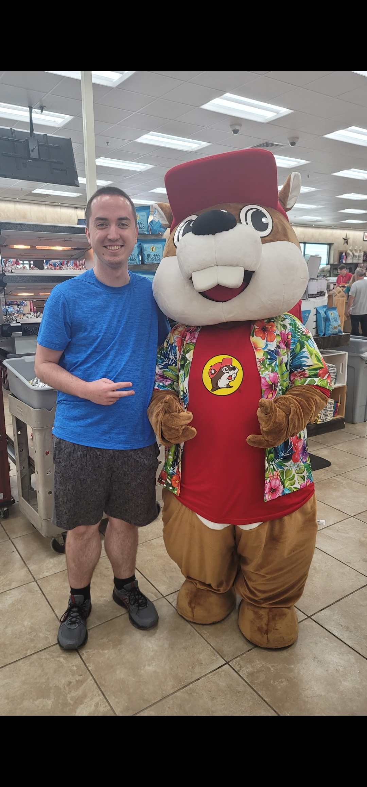

<!DOCTYPE html>

<html lang="en">
    <head>
        <meta name="viewport" content="width=device-width, initial-scale=1.0">
        <style>
            <title>Stephen Gale</title>
            * {
                box-sizing: border-box;
            }
            header {text-align: center}
            footer {text-align: center}
            [class*="col-"] {
                float: left;
                padding: 15px;
            }
            .col-1 {width: 8.33%;}
            .col-2 {width: 16.66%;}
            .col-3 {width: 25%;
                border: 1px solid #a2a9b1;
                border-spacing: 3px;
                background-color: #f8f9fa;
                color: black;
                margin: 0.5em 0 0.5em 1em;
                padding: 0.2em;
                font-size: 88%;
                line-height: 1.5em;
                width: 22em;}
            .col-4 {width: 33.33%;}
            .col-5 {width: 41.66%;}
            .col-6 {width: 50%;}
            .col-7 {width: 58.33%;}
            .col-8 {width: 66.66%;}
            .col-9 {width: 75%;}
            .col-10 {width: 83.33%;}
            .col-11 {width: 91.66%;}
            .col-12 {width: 100%;}

        </style>
    </head>

    <body>
        <aside class="col-9">
        <h1>Stephen Gale</h1>
        <hr>
        <p><b>Stephen Gale</b> (born November 14, 2000) is a college undergrad student. He graduated in June 2019 from <a href="https://www.qcsd.org/">Quakertown Community School District</a>. He began his college education majoring
            in Information Technology Systems at the <a href="https://www.bucks.edu/">Upper Bucks campus of Bucks County Community College</a>. After two years there he transferred to <a href="https://harrisburg.psu.edu/">Penn State Harrisburg</a> and
            changed his major to Cyber-security. After one semester at Penn State Harrisburg he transferred to <a href="https://lehighvalley.psu.edu/">Penn State Lehigh Valley</a> and again to <a href="https://berks.psu.edu/">Penn State Berks.</a></p>
        <p>Gale is an avid video game player and played competitively in a video game called <a href="https://www.brawlhalla.com/">Brawlhalla.</a> He has achieved the rank of Diamond multiple seasons and reaching as high as rank 97 in the global leaderboards.</p>
        <h2>Early Life</h2>
        <hr>
        <p>Stephen Gale was born on November 14, 2000, in Quakertown, Pennsylvania. His mother was a 911 operator turned stay-at-home mom when he was born. His dad is to this day a network administrator at a local school district.
        Gale lived in Quakertown from 2000 until 2022 when he moved to Bechtelsville, Pennsylvania in June 2022. Gale had his first job at Giant Food Stores at 16 where he worked until 18. At age 18 he then got a job at Upper Perkiomen School District.
        He worked there until he decided to pursure his education full time at Penn State. At this point he returned back to Giant part-time while going to class full-time.</p>
        <p></p>
        <h2>Video Game History</h2>
        <hr>
        <p>Gale has been playing video games for as long as he can remember. He started play Pokemon with his brother. He then progressed to playing an MMORPG called Runes of Magic with his dad and brother at age 8.
        He then moved to a variety of games, taking a liking to two games specifically. The first being League of Legends where he has by far put the most time into out of any game. The next being the one he has
        found the most success in called Brawlhalla. </p>
        <p>In 2018, through talking with friends in high school they got him into Brawlhalla. He quickly took a liking to the game and surpassed most of his friends skill levels quickly. He was briefly a member of Velo_citY eSports clan but went seperate ways
        quickly, though remaining friends with some members. In the summer of 2020 he began to put real time into becoming the best at the game. Upon reaching his goal of top 100 global in August 2020 he decided to retire and has since stopped playing more
            than just a few games here and there. </p></aside>
        <aside class="col-3">
        <h1><b><center>Stephen Gale</b></h1>
            
            <table>

                <tr>
                    <td><b>Born</b></td>
                    <td>November 14, 2000 (Age 22), Quakertown, Pennsylvania</td>
                </tr>
                <tr>
                    <td><b>Alma Mater</b></td>
                    <td>The Pennsylvania State University</td>
                </tr>
                <tr>
                    <td><b>Occupations</b></td>
                    <td>Cashier - IT Specialist</td>
                </tr>
            </table>
    </body>
</html>